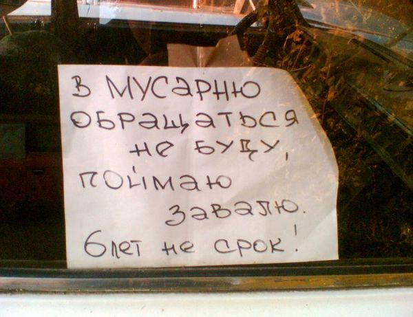

Решил коллега на работе рассказать историю из своей весёлой, деревенской молодости. Весь коллектив валялся уже после первой фразы:
- Несут, как-то, меня пьяного драться...
В детстве мама запрещала мне разговаривать с неизвестными. Поэтому уравнения приходилось решать молча.
Если пугать страуса через каждые 15 сантиметров, то за ним можно сажать картошку!
Сарказм - это умение похвалить человека таким образом, чтобы он надолго обиделся.
Одна моя очень близкая знакомая как-то выдала:
- Ты знаешь, что такое обаяние? Обаяние – это когда женщина молча говорит мужчине да!
- Так хочется, чтобы за мной приехал принц на белом коне!
- Не, мне лучше без коня.
- Да ты чего, это же так романтично!
- Ага, а на практике тебе мало того что этот прынц на шею сядет, так еще и за лошадюкой его навоз выгребать будеш!
- Купил недавно мультиформатный аудиоплейер, так он как наша футбольная сборная.
- Что, полный отстой?
- Наоборот – проигрывает всё!
ГАИ проводит акцию: Собери сто портретов президента Гранта – получи свои права обратно.
конституция Молдавии, пункт первый - обои класть без пузырей
Ширится экономический обмен России и Франции: французы присылают нам парфюмерию, которую можно пить, а мы им водку, от которой тени под глазами.
В холодную погоду у уличных художников быстрее всего кончаются синие карандаши.
Поднимем, что ли, За силу воли?
Мужчины чувствительны очень странным образом. Если мужчина растопил камин, и последнее полено не догорело, он может расценить это как личное оскорбление.
- Я хочу войти в десятку самых красивых женщин России!
- Представляешь, я тоже. Как мужчина разумеется
-Зачем тебе спирт?
-Струны протирать
-Какие струны?!
-Струны души!
- Слушай, я хочу снять великий фильм!
- Тебе че мало, что тебя прошлый раз с премьеры "Аватара" с видеокамерой выгнали?
- Папа, а как раньше люди обходились без лифтов?
- Да было полно общественных туалетов.
Сидит семья за столом, обедают. Сын не хочет есть.
Папа ему говорит: "А ну быстро ешь, а то писька не вырастет".
Мама: "Чему ребенка учишь! Лучше сам ешь!"
Марья Ивановна долго рассказывает на уроке о цели жизни и предназначении человека, а потом спрашивает: - Дети, что бы вы хотели, чтобы люди сказали о вас на ваших похоронах?
Петечка: - Я бы хотел, чтобы люди сказали, что я был великолепным доктором, что я спас столько людей и вылечил столько детей.
- Молодец, Петечка, а ты Манечка?
Манечка: - А я хотела бы, чтобы они сказали, что я была замечательной женой, матерью и бабушкой, что меня так все любили.
- Молодец, Манечка. Ну, Вовочка, а ты чтобы хотел услышать на своих похоронах?
- Смотрите! Он шевелится!!!
Моя бабка еще помнит беспроводные утюги...
Обобщив антропометрические данные, британские ученые установили, что средневзвешенные размеры проблем, которые мужчинам по**ю значительно больше, чем средневзвешенные размеры проблем, которые женщинам до***ды.
"Занимаюсь инвентаризацией и переоценкой духовных ценностей."
"Разрабатываю план порабощения вселенной."
"Составляю список для киллера, тебя вписал."
"Собираю ядерный заряд, нужно еще полкило плутония. У тебя нету?"
А как Вы отвечаете в аське на вопрос: "Почему не спишь?"
С женского форума:
Мы все зоофилки и извращенки...начинаем встречаться с “котиками“ и “пупсиками“..А заканчиваем с “козлами“ и “педиками“...
Мужик, болеющий обычно за футбол, вдруг сел смотреть что-то из женских видов спорта. Через пять минут из кухни прибежала разгневанная жена:
- Кто *лядина *баная?!!
Ночь. Женщина встает с кровати, на цыпочках подходит к своему будуару. Открывает ящик, там лежат разнокалиберные вибраторы. С нежностью глядя на них, шепотом поет: - Спят усталые игрушки...
- Да ты заколебал меня! Возвращаешься поздно ночью, натаптываешь в коридоре, гремишь посудой, будишь меня!
- Буду!
-...Ладно...хрен с тобой!...
В одном из интервью руководство АвтоВАЗа высказалось, что АвтоВАЗ - это живой организм. Они и сами не поняли, насколько оказались правы. Питается этот организм металлом, стеклом, пластмассой и резиной, а на выходе у него как и у всякого живого организма....
Село, глухая ночь... В окно крайней избы раздается осторожный стук. Хозяин матерясь подходит к окну
- Кого там нелегкая принесла?
- Хозяин дрова нужны?
- Да идите вы... нет, не нужны.
Просыпается хозяин утром, - дров нету.
Я говорю сыну: -Ты так букетом размахивал, когда ваш класс в школу заводили, цветы поломаться могли!
-Не, я их не поломал. Все четыре розочки подарил!
-Как четыре?! Их же пять было!
Сын невозмутимо: -Пятую мой одноклассник ещё на линейке поломал. И я её выбросил...
Я в шоке.
-Мам, а чего ты так смотришь на меня? Ну, зачем учительнице поломанный цветок?
1: а я жрать хочу. щас сварю себе воду, посолю, майонеза кину, помешаю, и поем
2: да выслал я тебе уже денег. иди проверяй.
1: спасибо, пап.
Лежат девчонки, лежат в сторонке, приходится переступать, потому что на 10 девчонок пацаны взяли 7 по 0,5..
Село, ночь. В огороде садится НЛО. Из дома выходит мужик и видит, что из НЛО вылазит инопланетянин: голова треугольная, на ногах — по 12 пальцев, на каждом пальце — по кольцу с бриллиантом.
— Ты кто?
— Инопланетянин.
— И что, у вас, инопланетян, у всех треугольные головы?
— Ну да.
— И у всех на ногах по 12 пальцев?
— Ну да.
— И у всех на каждом пальце — по кольцу с бриллиантом?
— Не. Это только у евреев.

Старость начинается тогда, когда нравиться начинают все женщины, а не только часть.
Общение в аське
Она: Ну все, спокойной ночи я срать
Он: )))))))))))))))))))))))
Она: Ой, я описалась!
Он: ))))))))))))))))
на столе записка от мамы: "на обед ешь борщ с папой" папы дома нет. я волнуюсь...
В вагоне метро молодая интересная женщина говорит мужчине, страстно смотрящему на нее:
- Молодой человек, оденьте меня, мне выходить на следующей остановке!
Просматриваю заголовки новостей - "Порносайты утрачивают былую популярность"! Подумалось, да ладно, что вы в самом деле, просто у меня неделя была загружена работой.
Пришли к Вещему Олегу волхвы и говорят:
- Ты погряз в роскоши, Олег! Ты забыл о поисках Истины! Вспомни, почему тебя вещим назвали.
Олег посмотрел на золотые кубки, булгарские ковры, византийское оружие ...
- Не помню, - вздохнул Олег. - Наверное, за любовь к вещам!
Понял, что причина чрезвычайно низкой аварийности на просёлочных дорогах обусловлена их особым форм-фактором - "кладбищем лежащих полицейских"!
Зная о бедственном положении аборигенов, великие морские державы Европы отправляли им гуманитарную помощь. Наибольшую известность получила гуманитарная экспедиция Джеймса Кука.
Зачем жениться?! Просто найди женщину, которую возненавидишь через пять лет и отдай ей свой дом
В секс-шопе:
- Простите, гражданка, но у нас просто и в наличии нет 128 искусственных членов! Да и зачем вам столько, если не секрет?!
- Я слышала, что для того, чтоб не волноваться, надо положить на всё @уй! Вот я и прикинула: на телевизор - один, на газеты - один, на радио - один, на маленькую зарплату - один, на начальника - один...
Охота на белого медведя в Норвегии не запрещена. Но защитники природы шума не поднимают. Потому как охота разрешена без оружия и каких-либо технических средств.
Во время боя с ветряными мельницами Дон Кихот случайно убил Карлсона
Реклама: "Экстракорпоративное оплодотворение! Результат уже после первой корпоративной вечеринки!"
Марь Иванна на уроке физики:
- Вовочка, в принципе в твоей работе все верно, но Гей Люссак это имя собственное, а не половая ориентация ученого...

xxx: Я даже не представляю, что должен сделать мой сын, что бы я ему сказал, что в молодости я себе такого не позволял.
Есть те, кто несут хаос и разрушение, есть те, чья ноша - добро и любовь. Есть и третьи, что несут порядок и справедливость. И есть я. Я несу пакетик.
Такой прекрасный день: не знаю, то ли чаю выпить, то ли повеситься...
Да, влюбиться - это прекрасно. Особенно если в меня..
Рай-это те три буквы,на которые никто никого не посылает...
Уходите по-английски... Не дожидайтесь, пока вас пошлют по-русски...
Ныряя на большую глубину, помните: запас воздуха ограничен! Поэтому старайтесь разглядеть самое интересное, например, как русалки рожают.
Только когда первая обезьяна на заре цивилизации взяла в руки палку, остальные начали трудиться.
Красное вино полезно для здоровья. А здоровье нужно, чтобы пить водку.
Летом в Сочи всего две проблемы - это утопающие и дизентерия. Поэтому существует два лозунга: "Спаси, Господи!" и "Пронеси, Господи!"
- Вы слышали, на Землю снова летит гигантский метеорит!!!
- Фигня, нам ничего не грозит, мы от Нью-Йорка за 15 тысяч километров...
В поликлинике надпись на кабинете уролога:
"Просто так заходить хвастаться НЕЛЬЗЯ!!!".
Уходя в пятницу вечером - никогда не знаешь, в какой понедельник ты вернёшься домой...
Нельзя говорить так, чтобы одновременно получалось красиво, умно и честно.
Она: - Ну и какого цвета у меня глаза?
Он: - Третьего размера.
Молодая, красивая девyшка без комплексов продаст два вагона цемента.